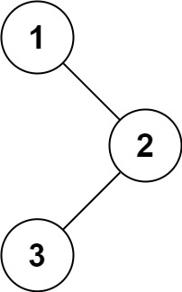

94. 二叉树的中序遍历
Morris 遍历：给左子树最右的结点临时接一条线索指回当前结点，走完左子树能回来，回来时再断开线索。
思路
pre是cur左子树里最右的结点（cur.left一路向右，遇到空或线索就停），也就是cur的中序前驱。- 建线索：
pre.right == null，说明第一次到cur。令pre.right = cur（给自己留一条回来的路），再进左子树。 - 断线索：沿线索回到
cur时，pre.right == cur，说明左子树已走完。令pre.right = null还原，再访问cur，走右边。 - 没有左子树的结点：直接访问，走
cur.right；这条右指针可能就是线索，会带你回到祖先。
图解
最优解
1import java.util.*;2 3class Solution {4 public List<Integer> inorderTraversal(TreeNode root) {5 List<Integer> ans = new ArrayList<>();6 TreeNode cur = root;7 while (cur != null) {8 if (cur.left != null) {9 // pre 是 cur 的中序前驱：左子树里最右的结点10 // 向右走遇到空，或遇到指回 cur 的线索就停11 TreeNode pre = cur.left;12 while (pre.right != null && pre.right != cur) pre = pre.right;13 if (pre.right == null) {14 // 第一次到 cur：建线索 pre -> cur，再进左子树15 pre.right = cur;16 cur = cur.left;17 continue;18 }19 // 第二次回到 cur：左子树走完了，断开线索20 pre.right = null;21 }22 // 没有左子树，或线索已断：访问 cur，再往右走23 ans.add(cur.val);24 cur = cur.right;25 }26 return ans;27 }28}题目
给定一个二叉树的根节点 root ，返回 它的 中序 遍历 。
示例 1：

输入：root = [1,null,2,3] 输出：[1,3,2]
示例 2：
输入：root = [] 输出：[]
示例 3：
输入：root = [1] 输出：[1]
提示：
- 树中节点数目在范围
[0, 100]内 -100 <= Node.val <= 100
进阶: 递归算法很简单，你可以通过迭代算法完成吗？
题面取自力扣当前版本。
数据快照 2026-11-04。题面版权归力扣所有，本站点仅供本人学习使用，请勿对外发布。